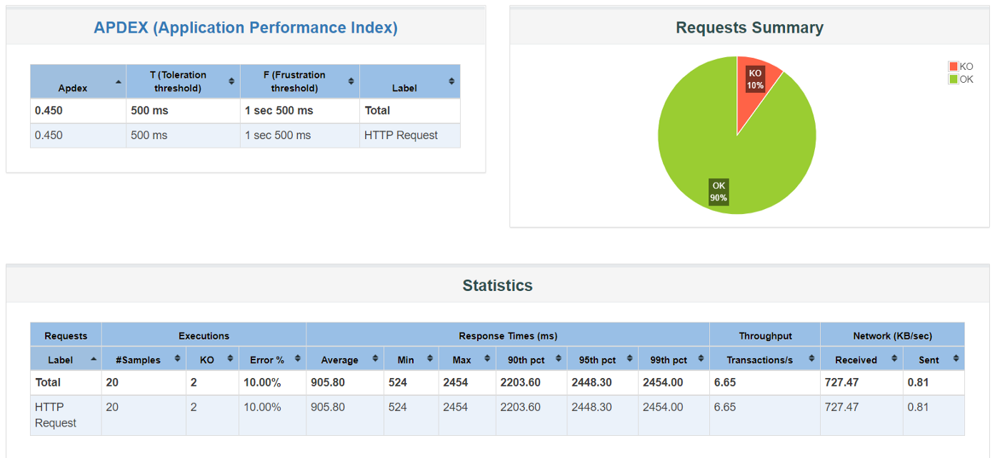
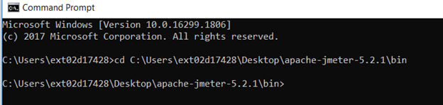
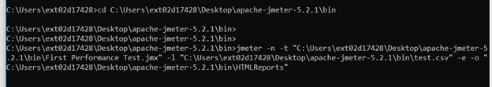
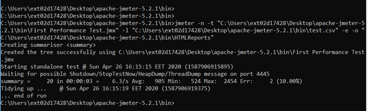
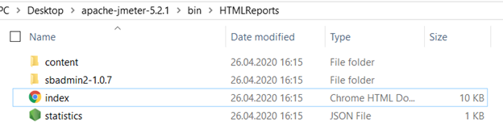
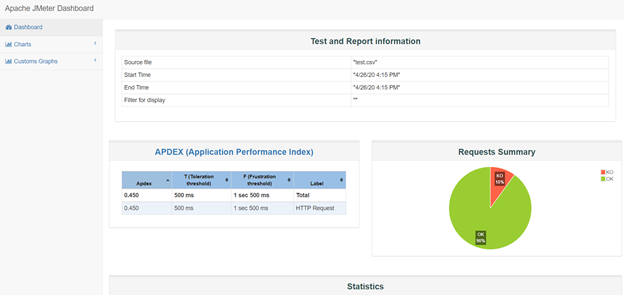
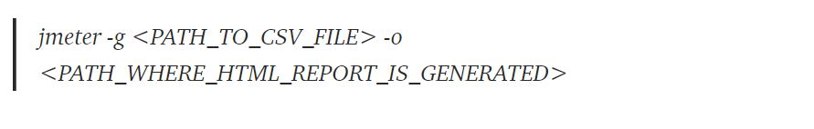
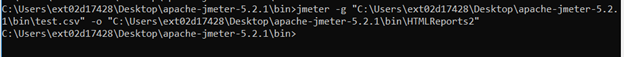

Herkese merhaba,
Serinin altıncı yazısında sizlerle JMeter ile performans testlerimizde HTML Reporter kullanımı hakkında bilgiler vereceğim. Keyifli bir yazı olması dileğiyle…
JMeter, performans testlerini koşmamız için bize GUI mod ve GUI olmayan mod olmak üzere iki alternatif sunmaktadır. JMeter’ı GUI modunda çalıştırmak için işletim sistemimize bağlı olarak bin dizini altından windows için jmeter.bat, linux ve mac için jmeter.sh dosyalarından bir tanesini çalıştırmalıyız. Fakat GUI kullanımının daha önceki yazılarımda da belirttiğim gibi birçok dezavantajı bulunmaktadır.
JMeter GUI modunda kaydedilen komut dosyalarını çalıştırırken memory ve CPU tüketerek test sonuçlarımızı etkiler. Böyle bir durumun üstesinden gelmek için komut dosyasının GUI olmayan modda çalıştırılması gerekir. GUI olmayan modda JMeter’dan saniyede daha fazla request alınır. Bu sebeple GUI olmadan JMeter’ı çalıştırmak tercih edilen bir seçenektir.
Peki GUI olmayan modda test sonuçlarımızı nasıl yorumlayacağız? Paydaşlarımıza test sonuçlarını nasıl raporlayacağız? Grafiksel ve istatistiksel olarak sonuçları paylaşarak ihtiyacımız olan resource hakkında nasıl hak talep edeceğiz? Veya sistemin yeterli olduğunu nasıl kanıtlayacağız?
JMeter, bir test planından grafikler ve istatistikler almak için bir dashboard oluşturmamıza izin verir. Bunu JMeter’in modüler bir uzantısı olan “Dashboard Generator” ile yapmamıza olanak tanır. Çalışma prensibinden bahsedecek olursak; grafiksel ve istatistiksel görünümler içeren HTML dosyaları oluşturmak için CSV dosyalarından örnekleri okur ve işler. Bir performans testinin sonunda veya talep edildiği zaman bu raporu oluşturabilir.
Peki bunu nasıl yapacağız? Aşağıdaki adımları takip ederek kolayca HTML reporter oluşturabiliriz.
Adım 1: Test planınızı oluşturun ve kaydedin.
Adım 2: Komut satırını açın ve aktif dizini jmeter\bin olarak değiştirin.
Adım 3: Test planınızı komut satırı modunda çalıştırın.
jmeter -n -t “location of the jmeter script” -l “location of result file” -e -o “location of the output folder”
Bu kısım biraz karmaşık olabileceği için ayrıntılı olarak anlatmak istiyorum.
jmeter –n: JMeter’in komut satırı modunda koşulacağını belirtir.
-t testPlan.jmx: Koşulacak olan test planı belirtilir. Ben genelde dizin olan belirmeyi tercih ediyorum.
Örneğin; -t “C:\Users\Desktop\apache-jmeter-5.2.1\bin\First Performance Test.jmx”
-l log.jtl: Log dosyası test sonuçlarını saklar. Önceden bir .csv dosyası oluşturarak belirtmeniz gerekir.
Örneğin; -l “C:\Users\Desktop\apache-jmeter-5.2.1\bin\test.csv”
-e -o “location of the output folder” : Oluşturulan HTML raporunun kaydedileceği klasörü gösterir.
Daha önceki yazılarımızda oluşturduğumuz medium.com/membership sayfasına ait test planını komut satırı üzerinden koşacağız.
Aşağıda “test summary” parametre değerlerini ve ardından testin sonlandığını gözlemledik. Test Summary’ de; gönderilen request sayısını, minumum, maksimum ve ortalama response time değerlerini ayrıca test sonucundaki hata oranı gibi değerleri gözlemleyebiliriz.
Test tamamlandıktan sonra HTMLReports klasörünün altına gittiğimizde test raporumuzun oluştuğunu gözlemleyeceğiz.
“index.html dosyamızı açtığımızda aşağıdaki dashboard ile karşılaşacağız.
Bu dashboard’a ait arayüzde gezindiğimizde başarılı ve başarısız olan requestleri, istatistiksel olarak minimum, maksimum ve ortalama response time değerlerini, en çok tespit edilen hataları, tüm hataları, latency değerlerini ve daha bir çok sonucu grafiksel ve istatistiksel olarak gözlemleyebilir, paydaşlarımız veya müşterilerimizle paylaşabiliriz.
Ek olarak, zaten test sonuçlarını içeren bir CSV dosyamız varsa ve HTML raporu oluşturmak istiyorsak, JMeter kullanıcılara bu imkanı da sunmaktadır. Tek yapmamız gereken aşağıdaki komutu kendi testimize uyarlamaktır.
Örneğin;
Umarım faydalı bir yazı olmuştur. Bir sonraki yazımızda görüşmek üzere.
Herkese keyifli ve sağlıklı haftalar :)